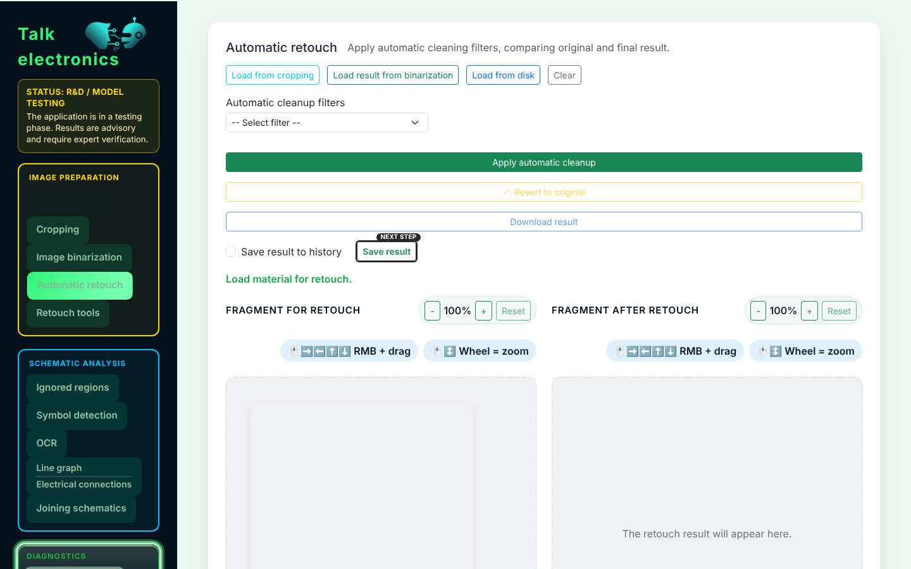
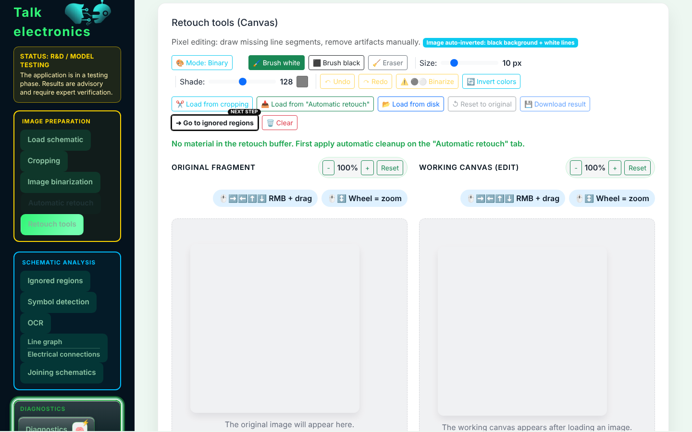
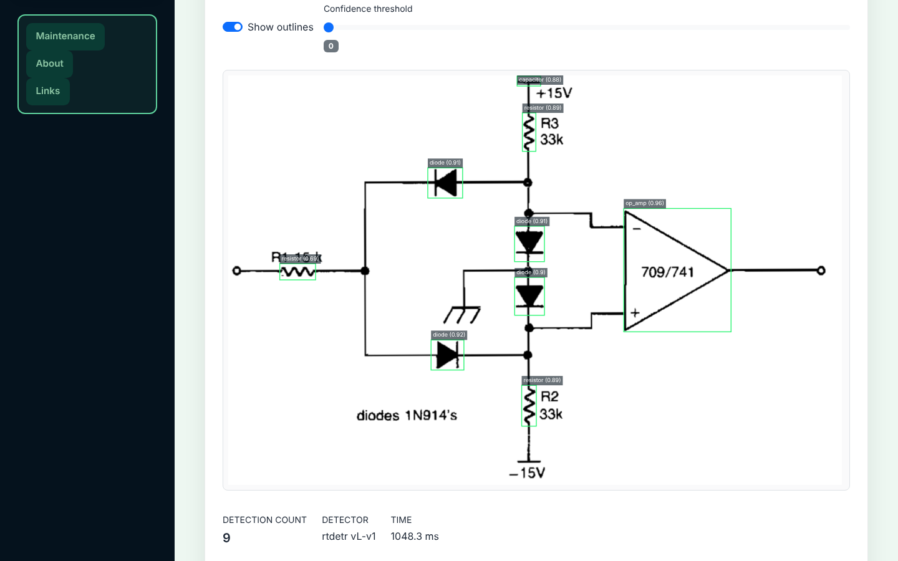
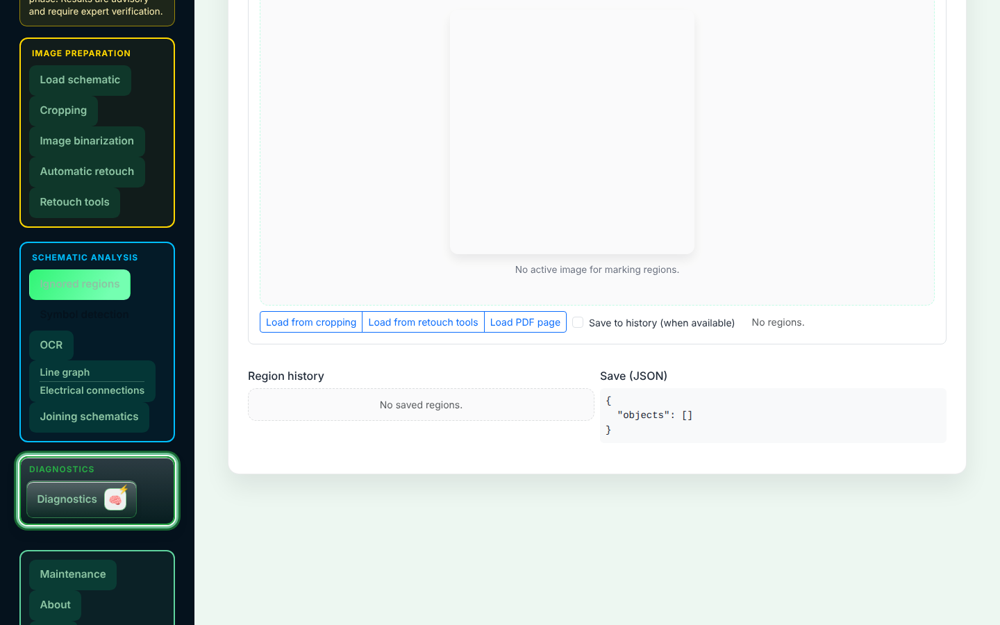
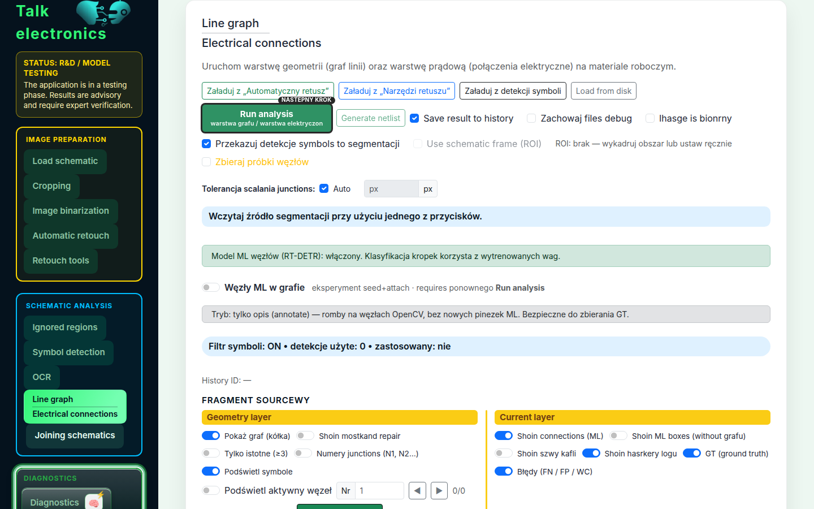
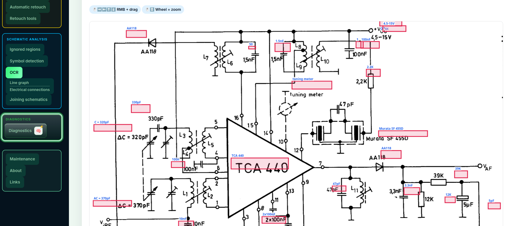

Talk Electronics — AI-Powered Schematic Analysis
From schematic scan to diagnostics and netlist — an end-to-end AI product for electronics
What is Talk Electronics?
Talk Electronics is an AI application I am building for automatic analysis of electronic schematics. The system turns PDF scans and circuit photos into machine-readable data: it detects components, reads designators and values, builds a netlist, and supports step-by-step diagnostics.
I have been developing the project since September 2025 in a broad role that combines product thinking, data science, QA, and practical use of AI tools to speed up development. I own both the product direction and technical decisions for the OCR pipeline, object detection, data quality, and user experience.

Main UI — automatic schematic retouch, tab navigation, and retouch filter selectionWhat the app can do
Symbol detection (AI)
At the core is an RT-DETR-L (Real-Time Detection Transformer) detector that recognizes electronic components on a schematic: resistors, capacitors, transistors, ICs, inductors, and diodes.
- Bounding-box overlay drawn directly on the schematic
- Results table with class label, confidence, and coordinates
- Lazy GPU loading — VRAM allocated only on first use
- Multiple sources: PDF page, image file, data-URL

Retouch tools paletteOCR — reading text from schematics
The OCR module, based on PaddleOCR PP-OCRv4, reads schematic text with pixel-level boxes and is the key step from image to structured data:
- Categorization — token type: component designator (R1, Q410), value (33K, 2SC1740), net label (VCC, GND), other
- Smart pairing — pairing designators with values (Q410 → 2SC1740, R436 → 100K), with semiconductor-aware matching for transistors
- Post-processing — multi-stage token cleanup: OCR correction (1O0K→100K), merging vertical fragments, noise removal, fixing semiconductor marks (2SCI740→2SC1740)
- Clickable bounding boxes — every recognized string is interactive on the canvas

Object detectionAdvanced graphics editor
An image-preparation module built for real schematics: damaged, skewed, noisy, or photographed in difficult conditions.
- Cropping — rectangular and polygonal (polygon)
- Deskew — automatic deskew plus a manual angle slider
- Canvas editor — brush, eraser, multi-color drawing with stroke width control
- Binarization — Otsu, adaptive, and manual threshold
- Retouch — denoise, morphological filters, median, blur cleanup
- Undo/Redo — full operation history

Ignored regions tabNetlist generation and SPICE export
From detected symbols and line segmentation the app builds a connectivity graph and produces a netlist for further analysis:
- Automatic line extraction (skeletonization) and junctions
- Netlist with edge graph and cycle detection
- Edge connectors — multi-page schematic linking with a connector form
- SPICE export (.cir) — a deck ready for circuit simulation

Line / junction graph detectionDiagnostic AI chat
The chat module uses the generated netlist as context for an AI diagnostic layer:
- Suggested measurements (voltage, resistance, drop)
- Flagging suspicious nodes and anomalies
- Step-by-step repair guidance
- Isolating problem sections of the schematic

OCR model and correction tabTechnology stack
The stack was chosen for real CV/AI product needs: document processing, unusual input data, iterative model development, and a path to production deployment.
Backend
| Technology | Role |
|---|---|
| Python 3.11 | Primary language |
| Flask | Web framework (factory pattern + Blueprints) |
| REST API | Frontend–backend communication (JSON) |
AI / Machine Learning
| Model / library | Role |
|---|---|
| RT-DETR-L (Ultralytics) | Electronic symbol detection (transformer) |
| PaddleOCR PP-OCRv4 | OCR with precise bounding boxes |
| PyTorch | Deep-learning framework |
| PaddlePaddle 3.3 | Framework for OCR |
Image processing
| Library | Role |
|---|---|
| OpenCV | Binarization, morphology, deskew, filters |
| PyMuPDF (fitz) | PDF → PNG rendering |
| Pillow | Image manipulation, masks |
| NumPy | Array operations |
Frontend
| Technology | Role |
|---|---|
| JavaScript (modular) | UI logic |
| Canvas API | Interactive image editor |
| Bootstrap 5.3 | Responsive layout |
| HTML/CSS | User interface |
Testing and code quality
| Tool | Role |
|---|---|
| Pytest | Unit/integration tests (284+) |
| Playwright | E2E tests (smoke + full) |
| GitHub Actions | CI/CD with automated checks |
| Pre-commit hooks | isort, flake8, YAML validation |
Infrastructure
| Technology | Role |
|---|---|
| Linux (Ubuntu) | Runtime environment |
| Docker | Containerization (GPU training) |
| Conda | Environment management |
| DigitalOcean | Target hosting |
Synthetic training-data pipeline
A strong part of the project is the training-data generation pipeline, which reduces dependence on hand-labeled sets and speeds up model experiments:
- PIL mock generator → random component placement, PNG export + JSON/COCO annotations (KiCad API integration planned)
- Export → PNG with COCO annotations
- Augmentations — albumentations: noise, blur, rotation, dropout (profiles: light/scan/heavy)
- Conversion → COCO → YOLO format with automatic train/val/test split
The model therefore learns not only on hand-prepared data but also on thousands of synthetically generated schematics. Product- and engineering-wise that means faster iterations, easier hypothesis testing, and tighter control of dataset quality.
Where we are heading
Vision
Talk Electronics aims to become a complete tool for electronics analysis and diagnostics that:
- Turns every schematic scan into an interactive, machine-readable document
- Guides the user step by step through fault diagnosis
- Learns from every correction — the more repairs, the more accurate the system
Near-term goals
| Phase | Description | Target |
|---|---|---|
| Phase I | Full OCR + RT-DETR + netlist integration | ✅ Done (August 2026) |
| Phase II | Beta pipeline: Image → detection → OCR → netlist → AI chat | ✅ Done locally (September 2026) |
| Phase III | Production deploy on DigitalOcean + hard-schematic testing | June 2027 |
Longer-term vision
- Diagnostic dialogue — suggested measurements and a structured diagnosis path
- Repair process — which parts to replace and how to verify the fix
- Self-improving — every user correction feeds the training base
- Legacy hardware — 1970s–90s paper schematics, damaged and hard to read
Key differentiators
Not a single model, but a full path: from PDF and preprocessing, through detection and OCR, to netlist, diagnostics, and SPICE export. **Local AI**
RT-DETR and PaddleOCR run locally, lowering operating cost and keeping full control of input data. **Interactive editing**
The canvas editor supports the operator at every stage: crop, retouch, deskew, and ignored regions.
Unit and E2E (Playwright) coverage plus automated quality gates in CI/CD. **Synthetic data pipeline**
PIL mock generator → COCO → YOLO with augmentations scales dataset and model development. **Human + AI duo**
The project shows practical use of AI tools in development: faster iterations with product and technical control retained.
Repository
Portfolio site · Robert Bąk · September 2026